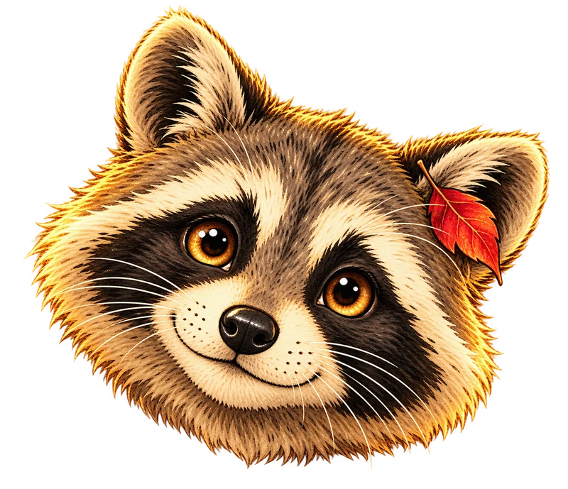
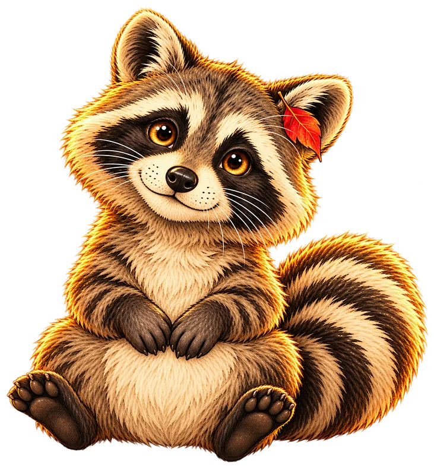
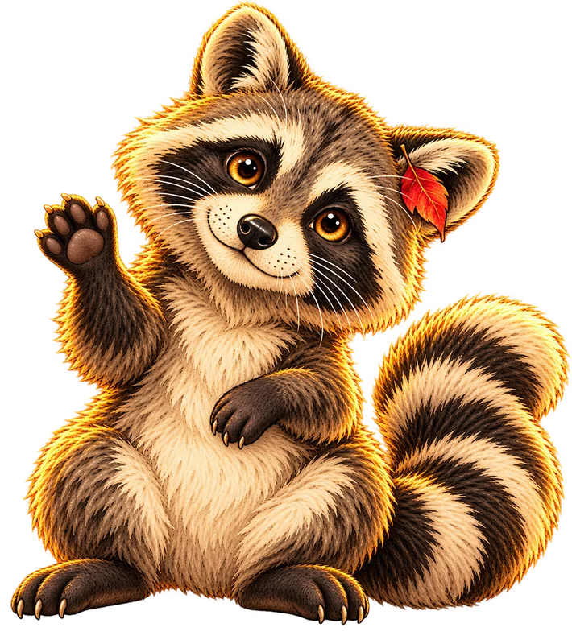

1 · Neugieriges Gesicht
Für den kleinen Knopf am Bildschirmrand. Direkt erkennbar, auch auf dem Handy.
Ansicht in klein
Drei Entwürfe für euren Begleiter bei Herz und Schnauze. Ein Charakter, drei Möglichkeiten.

Für den kleinen Knopf am Bildschirmrand. Direkt erkennbar, auch auf dem Handy.

Sitzt gemütlich dabei, legt die Pfoten zusammen und schaut neugierig zu dir hoch.

Eine kleine Begrüßung mit schrägem Kopf und erhobener Pfote. Liebenswert und ein bisschen frech.